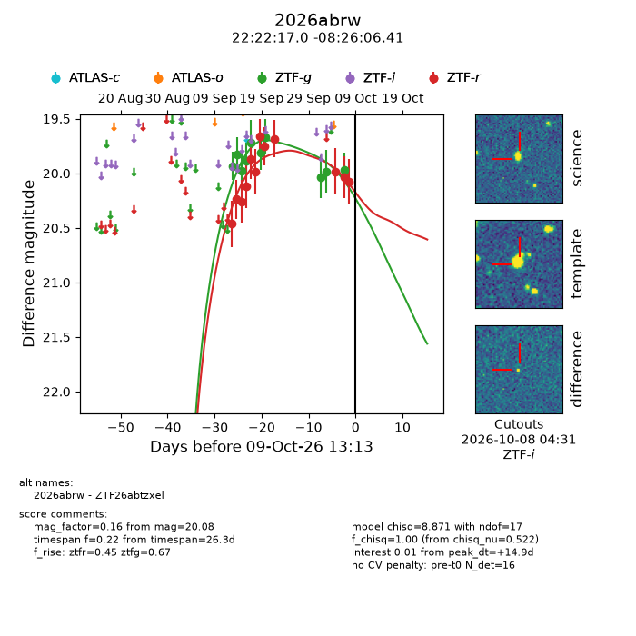
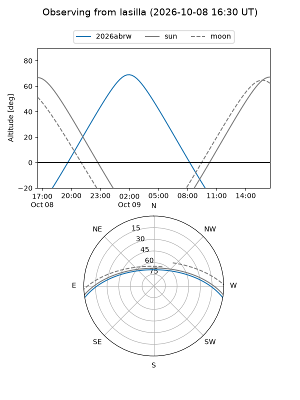
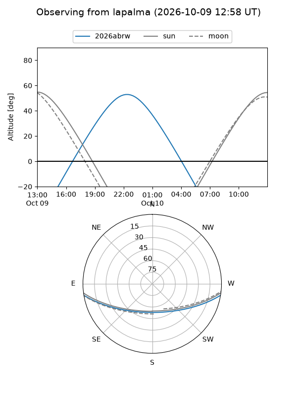
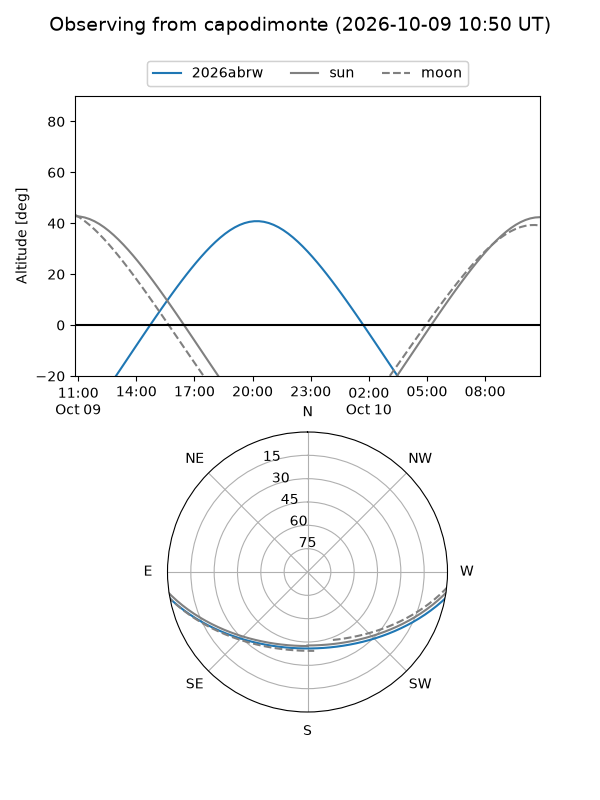
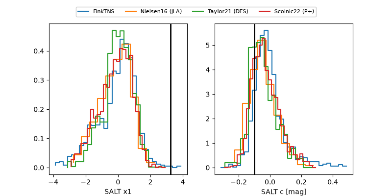

2026abrw
Target 2026abrw at 2026-10-09 13:15
Aliases and brokers:
FINK-ZTF: ztf.fink-portal.org/ZTF26abtzxel
Lasair-ZTF: lasair-ztf.lsst.ac.uk/objects/ZTF26abtzxel
ALeRCE-ZTF: alerce.online/object/ZTF26abtzxel
YSE-PZ: ziggy.ucolick.org/yse/transient_detail/2026abrw
TNS name: wis-tns.org/object/2026abrw
Direct TNS query: direct search
alt names
ZTF26abtzxel (ztf,fink_ztf)
2026abrw (tns,yse)
Coordinates:
equatorial (ra, dec) = 335.5709,-8.43511
equatorial (HMS+DMS) = 22:22:17.03,-08:26:06.41
galactic (l, b) = (53.7870,-50.11190)
Flags:
peak dt: +14.9
Photometry:
last ztfg=19.97, ztfr=20.08
10 ztfg, 12 ztfr detections
Lightcurve

Visibility



Additional plots
